배관기능장 (2017-07-08 기출문제)
1과목: 임의구분
1. 그림과 같은 자동제어의 블록선도(block diagram) 중 A, C, D, F의 제어요소를 순서대로 배열한 것은?
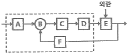
- 설정부, 조절부, 조작부, 검출부
- 설정부, 조작부, 조절부, 검출부
- 설정부, 조작부, 조절부, 제어대상
- 설정부, 조작부, 비교부, 제어대상
(정답률: 79%)

2. LP가스 공급방식에서 강제기화 방식 중 기화에 의해서 강제 기화시키는 방식은?
- 자연기화 방식
- 공기 혼합 가스공급 방식
- 변성가스 공급 방식
- 생가스 공급 방식
(정답률: 70%)
3. 펌프의 설치 및 주변 배관 시 주의사항으로 틀린 것은?
- 펌프는 일반적으로 기초 콘크리트 위에 설치한다.
- 흡입관은 되도록 길게 하고 직관으로 배관한다.
- 효율을 좋게 하기 위해서 펌프의 설치 위치를 되도록 낮춰서 흡입 양정을 작게 한다.
- 흡입관의 중량이 펌프에 미치지 않도록 관을 지지하여야 한다.
(정답률: 86%)
4. 루프 통기 방식(loop vent system)에 관한 설명으로 틀린 것은?
- 회로 통기 또는 환상 통기 방식이라고도 한다.
- 루프 통기로 처리할 수 있는 기구의 수는 8개 이내이다.
- 통기 입관에서 최상류 기구까지의 거리는 7.5m 이내로 한다.
- 배수 주관이 통기관을 겸하므로 건식통기라고도 한다.
(정답률: 67%)
5. 난방시설에서 전열에 의한 손실열량이 11.63kW이고 환기손실열량이 3.14kW인 곳에 증기난방을 할 경우 소요되는 주철제 방열기는 몇 절이 필요한가? (단, 주철제 방열기 1절의 방열 표면적은 0.28m2이고, 방열량은 0.76kW/m2이다.)
- 20절
- 35절
- 50절
- 70절
(정답률: 70%)
6. 피드백 제어에 대한 설명으로 옳은 것은?
- 사람의 손에 의하여 조작하는 제어
- 정해진 순서에 의한 제어
- 제어량의 값을 목표값과 비교하는 제어
- 정해진 수치에 의하여 행하는 제어
(정답률: 79%)
7. 온수난방 배관법인 역귀환방식인 것은?
- 리프트 피팅(lift fitting) 방식
- 리버스 리턴(reverse return) 방식
- 하트포드 배관(hartford connection) 방식
- 냉각 레그(cooling leg) 방식
(정답률: 84%)
8. 다음은 수요자 전용 가스정압기의 배관설치 도면이다. (가)배관의 명칭은?
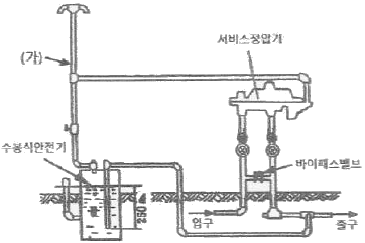
- 팽창관
- 방출관
- 공기공급관
- 정압기
(정답률: 87%)
9. 시퀀스 제어의 접점의 논리적(AND)회로의 논리식이 AㆍB=R일 때 참값표가 틀린 것은?
- 1ㆍ1=1
- 1ㆍ0=0
- 0ㆍ1=0
- 0ㆍ0=1
(정답률: 82%)
10. 배관시설에의 세정방법에 관한 설명으로 틀린 것은?
- 기계적 세정방법은 플랜트 본체나 부분을 분해하거나 해체할 필요가 없다.
- 화학 세정 법은 보통 설비를 운전하고 있는 상태에서 세정하는 방법이다.
- 산 세정법에서는 부식억제제의 선택이 매우 중요하다.
- 알칼리 세정은 유지류 및 규산계 스케일 등의 제거에 활용된다.
(정답률: 77%)
11. 자동화시스템에서 크게 회전운동과 선형운동으로 구분되며, 사용하는 에너지에 따라 공압식, 유압식, 전기식 등으로 구분되는 자동화의 요소로 옳은 것은?
- 센서(sensor)
- 액추에이터(actuator)
- 네트워크(network)
- 소프트웨어(software)
(정답률: 88%)
12. 아크용접 작업시의 주의사항으로 틀린 것은?
- 눈 및 피부를 노출시키지 말 것
- 홀더가 가열될 시에는 물에 식힐 것
- 비가 올 때는 옥외 작업을 금지할 것
- 슬랙을 제거할 때에는 보안경을 사용할 것
(정답률: 92%)
13. 다음 중 유류배관설비의 기밀시험을 할 때 사용할 수 없는 것은?
- 질소
- 산소
- 탄산가스
- 알곤가스
(정답률: 88%)
14. 추치제어에 관한 설명으로 틀린 것은?
- 목표값이 크거나 위치가 시간의 변화에 따라 임의로 변화되고, 이것을 제어량이 정확히 따라가고 외부 영향이 없도록 하는 제어이다.
- 추치제어는 비율제어와 프로그램제어로 구분할 수 있다.
- 2개 이상의 제어량 값이 일정한 비율관계를 유지하도록 하는 제어는 비율제어이다.
- 보일러와 냉방기 같은 냉ㆍ난방장치의 압력제어용으로 많이 이용된다.
(정답률: 70%)
15. 급수 배관 시공법에 대한 설명으로 틀린 것은?
- 배관 기울기는 모두 선단 앞 올림 기울기로 한다.
- 부식하기 쉬운 것에는 방식 피복을 한다.
- 수평관의 굽힘 부분이나 분기 부분에는 반드시 받침쇠를 단다.
- 급수관과 배수관이 평행 매설될 때는 양배관의 수평 간격을 500mm이상으로 한다.
(정답률: 65%)
16. 압력계 배관시공 시 유체에 맥동이 있는 경우에 설치하여 압력계에 맥동이 전파되지 않게 하는 것은?
- 사이폰(siphon)관
- 펄세이션(pulsation) 댐퍼
- 시일(seal)포드
- 벨로즈(bellows)
(정답률: 74%)
17. 도시가스 제조 공장의 부지 경계에서 정압기까지의 배관을 무엇이라고 하는가?
- 옥내내관
- 본관
- 공급관
- 옥외내관
(정답률: 70%)
18. 간접 가열식 중앙 급탕법에 대한 설명으로 틀린 것은?
- 가열용 코일이 필요하다.
- 고압 보일러가 필요하다.
- 대규모 급탕 설비에 적당하다.
- 저탕조 내부에 스케일이 잘 생기지 않는다.
(정답률: 68%)
19. 그림과 같은 파이프 랙(pipe rack)이 있다. 다음 중 연료유 라인, 연료가스 라인, 보일러 급수라인 등의 유틸리티(Utility) 배관은 어디에 배열하는 것이 가장 적합한가?
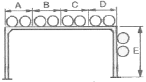
- A부분 및 D부분
- B부분 및 C부분
- C부분 및 D부분
- D부분 및 E부분
(정답률: 81%)
20. 사용압력에 따른 도시가스 공급방식이 아닌 것은?
- 저압 공급 방식
- 중압 공급 방식
- 고압 공급 방식
- 특고압 공급 방식
(정답률: 81%)
2과목: 임의구분
21. 단식과 복식이 있으며, 이음 방법은 나사이음식, 플렌지 이음식이 있고 일명 팩레스(packless) 신축 조인트라고도 하는 것은?
- 슬리브형
- 벨로즈형
- 루프형
- 스위블형
(정답률: 82%)
22. 유체의 흐름에 저항이 적고, 침식성의 유체에 대해 유체통로 속만을 내식성 재료로 하여 산등의 화학약품을 차단하는 특징을 가진 밸브는?
- 플랩밸브(flap valve)
- 체크밸브(check valve)
- 플러그밸브(plug valve)
- 다이어프램밸브(diaphragm valve)
(정답률: 81%)
23. 네오프렌 패킹에 관한 설명으로 틀린 것은?
- 고압 증기배관에 주로 사용된다.
- 내열 범위가 -46~121℃인 합성고무이다.
- 고무류 패킹에 해당된다.
- 내유성, 내후성, 내산화성 및 기계적 성질이 우수하다.
(정답률: 74%)
24. 계측기기의 구비조건으로 틀린 것은?
- 근거리의 지시 및 기록이 가능하고 구조가 복잡할 것
- 견고성과 신뢰성이 높고 경제적일 것
- 설치장소와 주위조건에 대해 내구성이 있을 것
- 정밀도가 높고 취급 및 보수가 용이할 것
(정답률: 91%)
25. 경질염화 비닐관에 대한 설명으로 틀린 것은?
- 열전도율이 강관, 주철관보다 10배 이상 크다.
- 전기 절연성이 좋으므로 전기부식 작용이 없다.
- 해수, 콘크리트 내부의 배관에는 양호한 내구성을 가진다.
- 극저온, 고온배관에는 부적당하다.
(정답률: 69%)
26. 합성수지 도료에 관한 설명으로 틀린 것은?
- 프탈산계 : 상온에서 도막을 건조시키는 도료이며 내후성, 내유성이 우수하다.
- 요소 멜라민계 : 내열성, 내유성, 내수성이 좋다.
- 염화비닐계 : 내약품성, 내유성, 내산성이 우수하여, 금속의 방식도료로 우수하다.
- 실리콘 수지계 : 은분이라고도 하며, 내후성 도료로 사용되며, 5℃ 이하의 온도에서 건조가 잘 안된다.
(정답률: 80%)
27. 배관재료 및 용도에 대한 설명으로 틀린 것은?
- 엘보 : 배관의 방량을 바꿀 때 사용한다.
- 레듀서 : 지름이 서로 다른 관을 연결할 때 사용한다.
- 밸브 : 유체의 흐름을 차단하거나 흐름의 방향을 바꿀 때 사용한다.
- 플랜지 : 배관을 필요에 따라 도중에 분기할 때 사용한다.
(정답률: 80%)
28. 증기와 응축수의 열역학적 특성에 따라 작동되는 증기트랩은?
- 디스크형 트랩
- 버킷형 트랩
- 플로트형 트랩
- 바이메탈형 트랩
(정답률: 58%)
29. 덕타일 주철관의 이음 종류가 아닌 것은?
- TS 이음
- 타이튼 이음
- 메카니컬 이음
- K-P 메카니컬 이음
(정답률: 73%)
30. 동관의 외경 산출공식에 의해 150A의 외경을 산출한 것으로 옳은 것은?
- 150.42mm
- 155.58mm
- 160.25mm
- 165.6mm
(정답률: 78%)
31. 보온 피복재 중 유기질 피복재가 아닌 것은?
- 코르트
- 암면
- 기포성 수지
- 펠트
(정답률: 67%)
32. 다음 중 토목, 건축, 철탑, 발판, 방판, 지주, 말뚝 등에 많이 쓰이는 강관의 종류는?
- 고압배관용 탄소강관
- 고온배관용 탄소강관
- 일반구조용 탄소강관
- 경질염화비닐 라이닝강판
(정답률: 87%)
33. 밸브의 종류별 특징에 관한 설명으로 옳은 것은?
- 감압밸브는 자동적으로 유량을 조정하여 고압축의 압력을 일정하게 유지한다.
- 스윙형 체크밸브는 수평, 수직 어느 배관에도 사용할 수 있다.
- 안전밸브에는 벨로즈형, 다이어프램형 등이 있다.
- 버터플라이 밸브는 글로브밸브의 일종으로 유량조절에 사용한다.
(정답률: 65%)
34. 스테인리스강 또는 인청동의 가늘고 긴 벨로즈의 바깥을 탄력성이 풍부한 구리망, 철망 등으로 피복하여 보강한 신축 이음쇠로 방진용으로도 사용이 가능한 것은?
- 플렉시블 튜브
- 신축곡관
- 슬리브형 신축 이음쇠
- 팩레스 신축 이음쇠
(정답률: 74%)
35. 주철관의 타이튼 이음(tyton joint)에 관한 설명으로 틀린 것은?
- 이음에 필요한 부품은 고무링 하나뿐이다.
- 매설할 경우 특수공구를 이용한 작업할 공간이 필요하므로 이음부를 넓게 할 필요가 있다.
- 온도변화에 따른 신축이 자유롭다.
- 이음 과정이 간단하며 관 부설을 신속히 할 수 있다.
(정답률: 75%)
36. 어떤 기름의 동점성계수 ν가 1.5×10-4m2/s이고 비중량이 8.33×103N/m3일 때 점성계수 μ의 값은?
- 1.28×10-3Nㆍs/m2
- 0.108Nㆍs/cm3
- 1.28×103Nㆍs/m2
- 0.128Nㆍs/m2
(정답률: 47%)
37. 다음 중 폴리에틸렌관 이음의 종류가 아닌 것은?
- 인서트 이음
- 테이퍼 조인트 이음
- 용착 슬리브 이음
- 몰코 이음
(정답률: 64%)
38. 주철관 이음 중 종래 사용하여 오던 소켓이음을 개량한 것으로 스테인리스 강 커플링과 고무링관으로 쉽게 이음 할 수 있는 방법은?
- 플랜지 이음
- 다이튼 이음
- 스크루 이음
- 노허브 이음
(정답률: 83%)
39. 동력나사 절삭기에 관한 설명으로 옳은 것은?
- 다이해드식은 관의 절단, 나사절삭은 가능하나 거스러미 제거 작업은 불가능하다.
- 오스터식은 지지로드를 이용하여 절삭기를 수동으로 이송하며 구조가 복잡하고, 관경이 큰 것에 주로 사용된다.
- 오스터식, 호브식, 램식, 다이해드식의 네가지 종류가 있다.
- 호브식은 나사절삭용 전용 기계이지만 호브와 파이프 커터를 함께 장치하면 관의 나사절삭과 절단을 동시에 할 수 있다.
(정답률: 77%)
40. 용접 작업 시 적합한 용접지그(JIG)를 사용할 때 얻을 수 있는 효과로 가장 거리가 먼 것은?
- 용접 작업을 용이하게 한다.
- 작업 능률이 향상된다.
- 용접 변형을 억제한다.
- 잔류 응력이 제거된다.
(정답률: 87%)
3과목: 임의구분
41. 석면 시멘트관의 심플렉스 이음에 관한 설명으로 틀린 것은?
- 수밀성과 굽힘성은 우수하지만 내식성은 약하다.
- 호칭지름 75~500mm의 지름이 작은 관에 많이 사용된다.
- 접합에 끼워 넣는 공구로는 프릭션 롤러(friction roller)를 사용한다.
- 칼라 속에 2개의 고무링을 넣고 이음하며 고무 개스킷 이음이라고도 한다.
(정답률: 64%)
42. 주철관의 소켓 이음에 관한 설명으로 옳은 것은?
- 코킹 방법은 예리한 정을 먼저 사용하고 점차 둔한 정을 사용한다.
- 용융 납은 2~3회에 걸쳐 나누어 삽입하면서 매회 코킹하도록 한다.
- 콜 타르(coal tar)는 주철관 표면에 방수 피막을 형성시키기 위해 도포한다.
- 마(야안)의 삽입길이는 수도용의 경우 전체 삽입길이의 2/3, 배수용은 1/3이 적합하다.
(정답률: 71%)
43. 용기 내에 유체가 t초 동안 흘러들어가게 한 후 유체의 질량을 W(kg), 체적을 V(m3)일 때 유량 Q(m3/s) 식은?
- t×V
- V/t
- t×W
- W×t
(정답률: 72%)
44. 테르밋 용접(Thermit welding)에 대한 설명으로 옳은 것은?
- 전기용접법 중의 한가지 방법이다.
- 산화철과 알루미늄의 반응열을 이용한 방법이다.
- 액체 산소를 사용한 가스용접법의 일종이다.
- 원자수소의 발열을 이용한 방법이다.
(정답률: 74%)
45. 10℃의 물 1kg을 100℃의 포화증기로 만드는데 필요한 열량은? (단, 물의 비열은 4.19kJ/kgㆍK이고, 물의 증발 잠열은 2256.7kJ/kg이다.)
- 539kJ
- 639kJ
- 2633.8kJ
- 2937.8kJ
(정답률: 73%)
46. 다음 중 증기를 교축할 때 변화가 없는 것은 어느 것인가?
- 온도
- 엔트로피
- 건도
- 엔탈피
(정답률: 66%)
47. 아래 기호는 보일러실의 배관용 기기를 표시한 것이다. 다음 중 이 기호가 의미하는 것은 무엇인가?
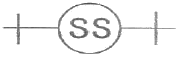
- 리프트 피팅
- 증기트랩
- 기수분리기
- 유분리기
(정답률: 70%)
48. 다음 중 압력계를 나타내는 도시기호는?
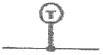
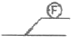
(정답률: 89%)
49. 다음 그림을 바르게 설명한 것은?
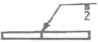
- I형 홈용접으로 2회 실시하시오.
- I형 홈용접으로 단속용접 하시오.
- I형 홈용접으로 루트간격 2mm로 하시오.
- I형 홈용접 루트간격 2mm로 양면 실시하시오.
(정답률: 80%)
50. 파이프의 외경이 1000mm, TOP EL30000이고, 또 다른 파이프 외경이 500mm, BOP EL20000이면 두 파이프의 중심선에서의 높이차는 몇 mm인가?
- 6000
- 7000
- 8500
- 9250
(정답률: 66%)
51. 다음의 계장계통 도면에서 FRC가 의미하는 것은?
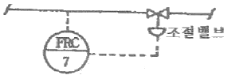
- 수위 기록 조절계
- 유량 기록 조절계
- 압력 기록 조절계
- 온도 기록 조절계
(정답률: 82%)
52. 다음과 같이 배관 라인번호를 나타낼 때, 각 사용 기호에 대한 설명으로 틀린 것은?
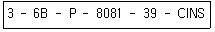
- 6B : 배관 호칭지름
- P : 유체기호
- 8081 : 배관번호
- CINS : 배관재료
(정답률: 81%)
53. 배관 내의 유체를 표시하는 기호 중 냉각수를 표시하는 것은?
- C
- CH
- B
- R
(정답률: 85%)
54. 저탕탱크 내의 가열코일을 도면에 나타내기 위하여, 탱크 정면도 상에서 불규칙한 곡선으로 일부를 떼어낸 경계를 표시하는데 사용하는 선의 명칭과 그 선의 종류 및 굵기로 옳은 것은?
- 회전단면선, 가는 파선
- 가상선, 가는 2점 쇄선
- 파단선, 가는 실선
- 절단선, 가는 1점쇄선
(정답률: 66%)
55. 품질특성에서 X 관리도로 관리하기에 가장 거리가 먼 것은?
- 볼펜의 길이
- 알코올 농도
- 1일 전력소비량
- 나사길이의 부적합 품 수
(정답률: 70%)
56. 다음 데이터로부터 통계량을 계산한 것 중 틀린 것은?
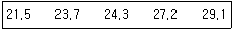
- 범위(R)=7.6
- 제곱합(S)=7.59
- 중앙값(Me)=24.3
- 시료분산(s2)=8.988
(정답률: 63%)
57. 검사특성곡선(OC Curve)에 관한 설명으로 틀린 것은? (단, N : 로트의 크기, n : 시료의 크기, c : 합격판정개수이다.)
- N, n이 일정할 때 c가 커지면 나쁜 로트의 합격률은 높아진다.
- N, c가 일정할 때 n이 커지면 좋은 로트의 합격률은 낮아진다.
- N/n/c의 비율이 일정하게 증가하거나 감소하는 퍼센트 샘플링 검사 시 좋은 로트의 합격률은 영향이 없다.
- 일반적으로 로트의 크기 N이 시료 n에 비해 10배 이상 크다면, 로트의 크기를 증가시켜도 나쁜 로트의 합격률은 크게 변화하지 않는다.
(정답률: 58%)
58. 다음 그림의 AOA(Activity-on-Arc) 네트워크에서 E작업을 시작하려면 어떤 작업들이 완료되어야 하는가?
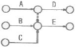
- B
- A, B
- B, C
- A, B, C
(정답률: 78%)
59. 브레인스토밍(Brainstorming)과 가장 관계가 깊은 것은?
- 특성요인도
- 파레토도
- 히스토그램
- 회귀분석
(정답률: 78%)
60. 표준시간을 내경법으로 구하는 수식으로 맞는 것은?
- 표준시간=정미시간+여유시간
- 표준시간=정미시간×(1+여유율)
- 표준시간=정미시간×
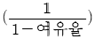
- 표준시간=정미시간×
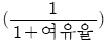
(정답률: 78%)
C: 조절부 - 제어 대상을 조절하는 부분
D: 조작부 - 조절부를 제어하는 부분
F: 검출부 - 제어 대상의 상태를 검출하는 부분
따라서, 정답은 "설정부, 조절부, 조작부, 검출부" 입니다.